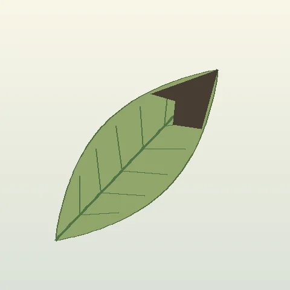

Waterlogging
Black, soft leaf margins
This is one possible explanation. Compare the signs below with those on your plant.

What to look for
Distinguish brittle edges from soft black tissue. Check for contact with cold glass or a recent chill.
Possible causes and next steps
Chilling and tissue decay can look similar. Avoid cold drafts and prolonged wet contact; watch for new injury.